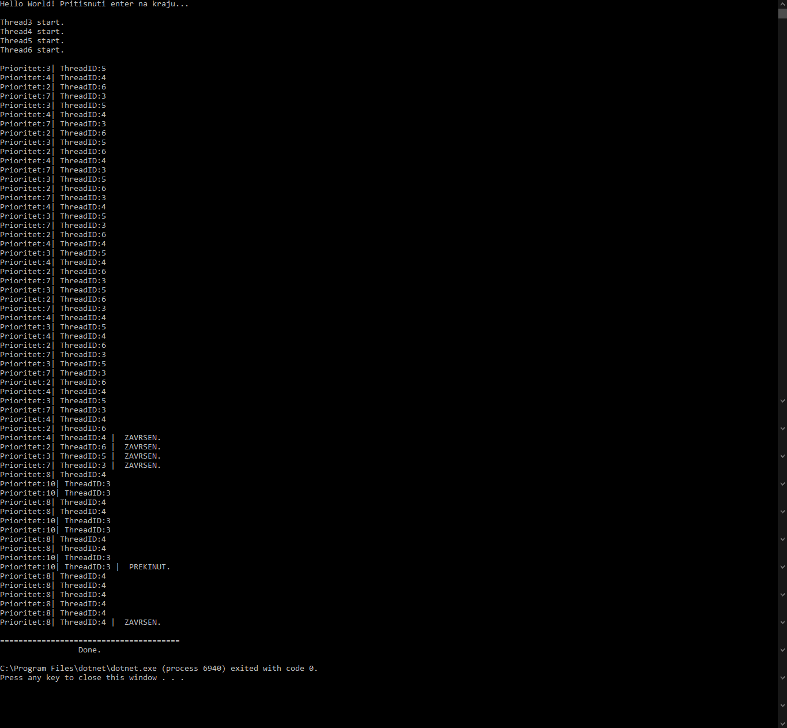
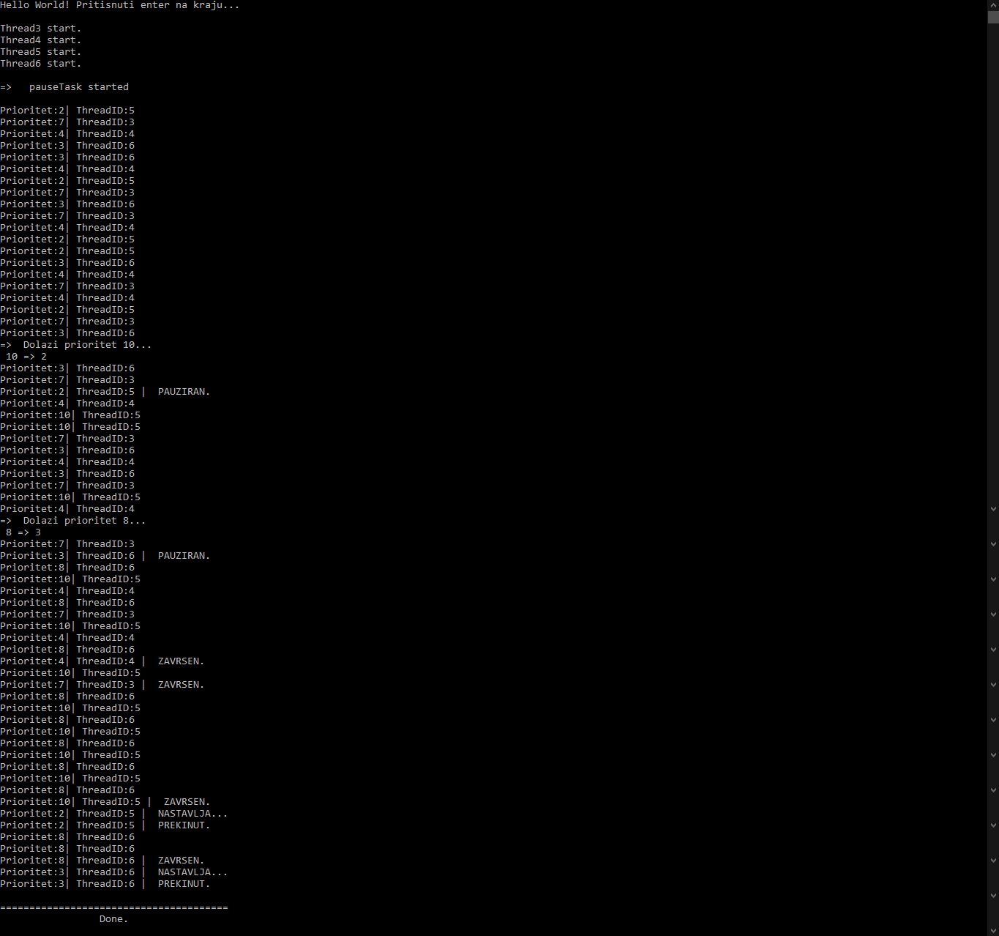

Da bismo mogli efektivno koristiti naš raspoređivač, prvo je potrebno instancirati objekat klase MyTaskScheduler sa željenim brojem niti koje će naš raspoređivač imati na raspolaganju, i navesti da li želimo preventivno ili nepreventivno raspoređivanje. Ove niti se odmah pokreću i čekaju da se pojavi zadatak koji treba da se izvrši.
Korisnik dodaje novi zadatak, pozivom funkcije ScheduleTask, koja kao argumente prima prioritet zadatka, funkciju koju zadatak treba zaista da izvrši, te vremenski rok izvršenja zadataka, respektivno.
Nakon pozivanja funkcije ScheduleTask, stvara se objekat klase MyTask, u kome će da se čuvaju proslijeđene informacije, karakteristične za taj zadatak. MyTask predstavlja klasu unutar koje su sadržane sve informacije o zadatku- njegov prioritet, pozicija unutar liste zadataka koji se raspoređuju, maksimalno trajanje, te statusne informacije koje govore o tome da li je zadatak pauziran, prekinut ili završen.
Napravljenom zadatku se prvo na osnovu prioriteta određuje pozicija u listi svih zadataka, te se pozivom myTask.task.Start(this); zakazuje njegovo izvršavanje na našem raspoređivaču.
Niti iz našeg bazena uzimaju zadatke iz liste, te pokreću njihovo izvršavanje pozivom TryExecuteTask(task);.
U slučaju nepreventivnog raspoređivanja, zadaci koji su raspoređeni će se izvršiti do kraja. Nit će, po izvršenju jednog, uzeti i izvršiti novi zadatak, ukoliko se on nalazi na listi pendingTasks.
U ovom slučaju je private bool preemption = false;, jer korisnik pri instanciranju objekta klase MyTaskScheduler, osim broja niti naveo i vrijednost false.

U slučaju preventivnog raspoređivanja, korisnik je pri kreiranju objekta klase MyTaskScheduler naveo vrijednost true, čime je kreirana i pokrenuta nit pauseTask.
Ova nit pauzira izvršavanje zadatka najmanjeg prioriteta, i na toj niti iz thread pool-a pokreće izvršavanje novog zadatka, ukoliko je njegov prioritet veći od prioriteta pauziranog. Nit konstatno radi i provjerava da li je došlo do preuzimanja.
U slučaju da sve dostupne niti iz bazena niti izvršavaju neki zadatak, a pojavio se novi zadatak koji čeka na izvršavanje, vršiće se provjera da li među zadacima koji se trenutno izvršavaju ima neki koji nije pauziran, i čiji prioritet je manji od prioriteta novog zadatka. Ukoliko je pronađen takav zadatak, dolazi do preuzimanja. Budući da je izvršavanje zadatka definisano na opisan način, preuzimanje će se izvršiti tako što će se zadatku koji se izvršava proslijediti zadatak koji ga preuzima, sa potrebnim argumentima, dok će prvi biti pauziran. Zadatak koji preuzima će biti uklonjen iz liste pendingTasks, kako bi se spriječilo da se izvrši ponovo na nekoj drugoj niti. Dakle, ovaj zadatak će biti izvršen na niti sada pauziranog zadatka, a po njegovom završetku, biće postavljeni određeni flegovi koji će omogućiti nastavak izvršavanja pauziranog zadatka.
public static void PrintFunction(MyTask mt)Funkcija koja je služila za simulaciju izvršenja zadatka jeste public static void PrintFunction(MyTask mt). Korisnička funkcija mora biti definisana na ovaj način, da bi raspoređivač ispravno radio, jer je na ovako omogućen pregled statusa zadatka, te njegovo prekidanje ili pauziranje, koje će biti od značaja u slučaju preventivnog raspoređivanja.
Detaljiniji opis navedene funkcije dat je u dokumentacionim komentarima.

Korisnik pri kreiranju novog zadatka navodi i njegov rok izvršenja. Kada nit uzme zadatak koji će izvršiti, neposredno prije njegovog pokretanja, pokreće se nit callBack koja je zadužena da zadatak prekine ukoliko je prekoračio rok izvršenja. Na osnovu zadatka, iz mape nalazimo odgovarajući objekat tipa MyTask, unutar kojeg nalazimo definisani rok. Nit spava taj period, potom se budi i postavlja isCancelled na true.
Vrši se dodjelom vrijednosti const int numOfThreads, pri čemu ovaj broj ne može da bude manji od 1.
Klasa MyResource predstavlja model resursa koji zadaci koriste.
Unutar nje nalazi se stvarni objekat koji će služiti za zaključavanje.
Ideja je da za svaki resurs koji će se koristiti znamo koji task ga pokušava zaključati, i koji task ga trenutno drži. Kada task zaključa resurs, on postavi sebe za holdera, završava posao, i uklanja holdera.
Za detekciju deadlock-a koristi se nit deadlockDetector. Ova nit stalno prolazi kroz listu resursa.
Deadlock će se desiti u slučaju da se nađu dva resursa takva da je holder jednog requester drugog, i obrnuto. Ako su pronađena takva dva resursa, nit je detektovala deadlock, koji će razriješiti na način što će uzeti zadatak holder sa manjim prioritetom, i terminirati ga.
Dodatna ideja da se terminirani zadatak ponovo doda za izvršavanje, da bi se potencijalno naknadno izvršio.
S obzirom na to da je raspoređivanje zadataka neblokirajuće zbog toga što se zadaci izvršavaju na posebnim nitima, dodavanje zadataka bi trebalo da je moguće u bilo kom trenutku.